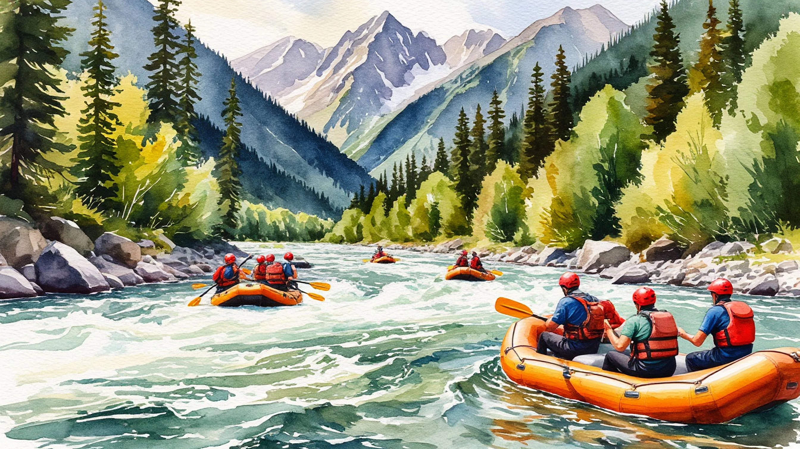
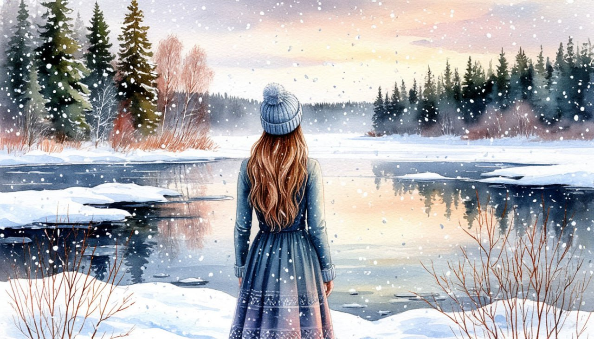

<<<<<<< HEAD
<<<<<<<< HEAD:html/karelia-3z.html
Даты тура: 20 - 25 июня | 25 - 30 июля | 15 - 20 августа
>>>>>>>> origin/main:html/karelia-3.html
=======
Карелия на релаксе

Даты тура:
с 3 января 2027 года (вс) по 7 января 2027 года (чт) ========Даты тура: 20 - 25 июня | 25 - 30 июля | 15 - 20 августа
>>>>>>>> origin/main:html/karelia-3.html
=======
Новогодний МЕГА -ТУР в Карелию

Даты тура: с 3 января 2026 года (сб) по 7 января 2026
года (сб)
>>>>>>> origin/main
Стоимость тура:
<<<<<<< HEAD
<<<<<<<< HEAD:html/karelia-3z.html
- 31 100 р. - взрослый
- 30 800 р. - пенсионеры/студенты/школьники
- 36 100 р./чел - одноместное размещение
========
- 35 700 р. - взрослый
- 35 400 р. - пенсионеры/студенты/школьники
- 45 700 р./чел - одноместное размещение
>>>>>>>> origin/main:html/karelia-3.html
=======
- 29 000 р. - взрослый
- 28 700 р. - пенсионеры/школьники
- 33 000 р./чел - одноместное размещение
>>>>>>> origin/main
По программе:
<<<<<<< HEAD
<<<<<<<< HEAD:html/karelia-3z.html
=======
>>>>>>> origin/main
- - Обзорная экскурсия по новогоднему Петрозаводску
- - Экскурсия в художественную галерею «Дом Куклы»
- - Экскурсия в заповедник Кивач
- - Мастер-класс по приготовлению калиток
- - Мастер-класс по обучению игре на национальном инструменте КАНТЕЛЕ
<<<<<<< HEAD
- - Остров Кижи
========
- - Обзорная экскурсия по Петрозаводску
- - Мастер-класс КАЛИТКА (национальный пирожок) + чаепитие с изделиями
собственного производства
- - Сплав на рафтах по реке Шуя / пикник /дегустация национальных напитков /
водная прогулка по Онежскому озеру (за доп.плату)
- - Посещение природного парка «Белая гора. Тивдийский мрамор»
- - Посещение водопада «Кивач»
- - Посещение о. Кижи (наружный осмотр всех памятников острова)
>>>>>>>> origin/main:html/karelia-3.html
=======
- - Новогодняя развлекательная программа: весёлые колядки и зимние песни у
костра, новогодний обряд шаманского бубна, угощение карельским чаем, подарки от духов и сказочных
героев
- - Остров Кижи
>>>>>>> origin/main
Программа тура:
<<<<<<< HEAD
1 день: Отправление
- 18-00- выезд из Костромы от ТРЦ "РИО"
=======
1 день:
- 15-00- выезд из Костромы от ТРЦ "РИО"
>>>>>>> origin/main
<<<<<<< HEAD
2 день: Петрозаводск
<<<<<<<< HEAD:html/karelia-3z.html
- Прибытие в Петрозаводск.
- Завтрак в кафе города.
- Встреча с экскурсоводом.
- Обзорная экскурсия по новогоднему Петрозаводску. На обзорной экскурсии Вы
увидите красивую набережную Онежского озера, где вас ждёт «Дерево желаний» и другие авангардные
скульптуры, подаренные городу городами-побратимами. Обязательно заглянем в Губернаторский парк!
- Увлекательная экскурсия в художественную галерею «Дом Куклы», единственную
частную галерею в Петрозаводске.
-
Здесь царит атмосфера сказки и добра.
- Вы познакомитесь с коллекцией авторских кукол Татьяны Калининой «Духи
Карелии или Кижские домовые».
- На память можете приобрести очаровательного ангелочка или домового.
- Обед в кафе
- Заселение в гостиницу.
=======
2 день:
- Сегодня мы отправляемся в самое популярное и фотографируемое место Карелии
- остров Кижи.
Это удивительный и неповторимый по своей красоте и самобытности остров на Онежском озере.
- Наш путь будет лежать через Медвежьегорск - небольшой карельский город,
известный своими уникальными достопримечательностями и тем, что он и его окрестности были
запечатлены на киноэкране – именно здесь снимали картину «Любовь и голуби».
- Здесь нас ждет вкусный завтрак и экскурсия.
- Далее мы поедем по просторам Заонежья, где почти нет населенных пунктов, а
сопровождает путников затаенная красота Заонежского полуострова.
- И так под неторопливый рассказ гида мы доедем до малюсенькой деревеньки,
откуда на судне воздушной подушке доберемся до о.Кижи , что бы полюбоваться знаменитым Кижским
ансамблем.
-
Прибытие на Кижи. Тишиной и гармонией карельской зимы встречает гостей остров. Бескрайнее голубое
небо, яркое зимнее солнце и невероятной белизны снег завораживают и удивляют.
- Обзорная пешеходная экскурсия (1 час 30 минут).
Экскурсия проводится по основной экспозиции музея: осмотр памятников Кижского архитектурного
ансамбля, посещение крестьянской усадьбы.
- Вы осмотрите уникальные многоглавые храмы и иконописное убранство
Покровской церкви Кижского погоста, войдете в дом заонежского крестьянина, узнаете, как и чем жили
эти люди, увидите церковь Воскрешения Лазаря.
- Обед в кафе
- Переезд в Петрозаводск ( 270 км)
- Заселение в гостиницу
3 день:
- Завтрак.
- Обзорная экскурсия по новогоднему Петрозаводску. На обзорной экскурсии Вы
увидите красивую набережную Онежского озера, где вас ждёт «Дерево желаний» и другие авангардные
скульптуры, подаренные городу городами-побратимами. Обязательно заглянем в Губернаторский парк!
Увлекательная экскурсия в художественную галерею «Дом Куклы», единственную частную галерею в
Петрозаводске.
- Здесь царит атмосфера сказки и добра.
- Вы познакомитесь с коллекцией авторских кукол Татьяны Калининой «Духи
Карелии или Кижские домовые».
- На память можете приобрести очаровательного ангелочка или домового.
>>>>>>> origin/main
- Свободное время, которое Вы можете провести в Новогоднем городке и еще
больше полюбить зимнюю Карелию.
<<<<<<< HEAD
3 день: Кивач
- Завтрак.
- Экскурсия в заповедник Кивач.
- Заповедник «Кивач» является одним из старейших на территории России. Он
был основан ещё в 1931 году. Заповедник – настоящий памятник, хранящий красоту удивительной
Карельской природы.
=======
4 день:
- Завтрак
- Экскурсия в заповедник Кивач
- Заповедник «Кивач» является одним из старейших на территории России. Он
был основан ещё в 1931 году. Заповедник – настоящий памятник, хранящий красоту удивительной
Карельской природы
>>>>>>> origin/main
- Водопад Кивач – природная жемчужина заповедника и Карелии, это второй по
величине равнинный водопад в Европе. Смотреть на падение воды можно бесконечно, водопад скатывается
каскадами, разбрызгивая капли на фоне живописных природных пейзажей! Водопад Кивач окутан тайнами и
легендами. Увидеть его стоит хотя бы для того, чтобы узнать интересные факты и сделать красивейшие
фотографии.
<<<<<<< HEAD
- Переезд в Кондопогу, красиво расположившуюся на берегу Онежского озера.
=======
- Переезд в Кондопогу, красиво расположившуюся на берегу Онежского озера.
>>>>>>> origin/main
- Новогодняя развлекательная программа. Отправляемся на берег Онежского
озера.
- В уютном северном чуме переплетаются саамские легенды и любимые сказки!
Вас ждёт волшебное приключение вместе с Дедом Морозом, героями и духами Севера: весёлые колядки и
зимние песни у костра, новогодний обряд шаманского бубна, угощение карельским чаем, подарки от духов
и сказочных героев! В зимней истории с карельским колоритом Вы станете частью волшебства! Посещение
питомника ездовых собак. Опытный каюр познакомит со своими питомцами, милые хаски, северный олень
всегда готовы позировать для фото в приятной компании.
<<<<<<< HEAD
- Далее нас ждет два интереснейших мастер класса:
- - Мастер-класс по приготовлению калиток.
- Калитки по праву считаются жемчужиной северной кухни. В старину их ещё
называли колядками и преснушками, пекли открытыми из ржаного теста с различными начинками,
наливками, намазками или припёками.
- После приготовления мы вместе пробуем их за чаепитием.
- - Мастер-класс по обучению игре на национальном инструменте КАНТЕЛЕ.
- Обед шведский стол.
- Возвращение в гостиницу.
4 день: Кижи
- Выезд с вещами из гостиницы.
- Сегодня мы отправляемся в самое популярное и фотографируемое место Карелии
- остров Кижи.
- Это удивительный и неповторимый по своей красоте и самобытности остров на
Онежском озере.
- Наш путь будет лежать через Медвежьегорск - небольшой карельский город,
известный своими уникальными достопримечательностями и тем, что он и его окрестности были
запечатлены на киноэкране – именно здесь снимали картину «Любовь и голуби».
- Здесь нас ждет вкусный завтрак и экскурсия.
- Далее мы поедем по просторам Заонежья, где почти нет населенных пунктов, а
сопровождает путников затаенная красота Заонежского полуострова.
- И так под неторопливый рассказ гида мы доедем до малюсенькой деревеньки,
откуда на судне воздушной подушке доберемся до о.Кижи , что бы полюбоваться знаменитым Кижским
ансамблем.
- Прибытие на Кижи. Тишиной и гармонией карельской зимы встречает гостей
остров. Бескрайнее голубое небо, яркое зимнее солнце и невероятной белизны снег завораживают и
удивляют.
- Экскурсия по музею-заповеднику Кижи (1 час 30 минут).
- Экскурсия проводится по основной экспозиции музея: осмотр памятников
Кижского архитектурного ансамбля, посещение крестьянской усадьбы.
- Вы осмотрите уникальные многоглавые храмы и иконописное убранство
Покровской церкви Кижского погоста, войдете в дом заонежского крестьянина, узнаете, как и чем жили
эти люди, увидите церковь Воскрешения Лазаря.
- Обед в кафе.
=======
- Далее нас ждет два интереснейших Мастер класса:
- Мастер-класс по приготовлению калиток.
- Калитки по праву считаются жемчужиной северной кухни. В старину их ещё
называли колядками и преснушками, пекли открытыми из ржаного теста с различными начинками,
наливками, намазками или припёками.
- После приготовления мы вместе пробуем их за чаепитием.
- Мастер-класс по обучению игре на национальном инструменте КАНТЕЛЕ.
- Обед "шведский стол"
>>>>>>> origin/main
- Окончание программы, выезд домой.
<<<<<<< HEAD
5 день: Прибытие домой
========
- Прибытие в Петрозаводск. Встреча с гидом.
- Завтрак.
- Обзорная экскурсия по столице Карелии - городу Петрозаводску. Посетим
Губернаторский парк, собор Александра Невского и сделаем памятные фото на старинных площадях города.
Совершим променад по Онежской набережной. Это единственный в мире музей современной авангардной
скульптуры под открытым небом. Здесь мы увидим кусочек звездного неба Нойбранденбурга, прошепчем
заветную мечту в УХО - Дерева Желаний и сфотографируемся у памятника основателю Петрозаводска -
Петру I.
- Переезд в Кондопожский район д.Ватнаволок на базу отдыха.
- Заселение в номера.
-
Обед.
- Свободное время.
3 день: Мастер-класс + отдых
- Завтрак.
- Мастер-класс КАЛИТКА (национальный пирожок) + чаепитие с изделиями
собственного производства– 45 мин.
- Отдых на базе.
- Свободное время
- ИЛИ
- за доп. плату по желанию (СТРОГО ПРИ БРОНИРОВАНИИ ТУРА):
- - Сплав на рафтах по реке Шуя+пикник: взрослый - 3250 руб./чел., детский
3000 руб./чел.
- - Пикник + дегустация национальных напитков: взрослый - 2150 руб./чел.,
детский 1620 руб./чел.
- Водная прогулка по Онежскому озеру из г. Кондопога с осмотром форелевого
хозяйства и пикником и дегустацией карельских настоек (для взрослых. Детям - морс): взрослый - 3300
руб./чел., детский 2900 руб./чел.
- Ограничений по возрасту нет, дети от 12 лет могут участвовать в сплаве без сопровождения родителей.
Опытные инструктора проведут инструктаж по технике безопасности, научат правильно застегивать
спасжилет и каску. Покажут технику управления рафтом и раскроют секрет магического слова «табань».
Пройдем вместе с ними по реке Шуя и устроим покатушки на пороге Большой Толь.
- Для выезжающих на пикник:
- Отдых в сосновом бору, прогулки по лесу, купание в реке, сбор ягод и
грибов (по сезону).
- Комплимент от фирмы - туристическая баня (2 двухсекционных палатки с
печкой (мужская и женская) - держат температуру русской бани
- Общий пикник у костра.В меню: карельская уха из форели, греча с тушенкой,
салат из свежих овощей, горячий чай с лимоном и печеньем. И, конечно же «победные» 150 г карельских
алкогольных напитков для взрослых.
- Возвращение на базу отдыха (те, кто брал доп.услуги).
4 день: Кивач
- Завтрак
- За природными загадками выезжаем на экскурсионную программу:
- Сегодня Вас ждет НОВИНКА маршрута: природный парк «Белая гора. Тивдийский
мрамор».
- Мрамор, добываемый на Белой Горе, уникален по расцветке и прочности. Его
использовали для отделки самых красивых зданий и дворцов Петербурга — Исаакиевского собора, Зимнего,
Мраморного, Михайловского и Мариинского дворцов, Инженерного замка, Казанского собора.
- Посещение вулкана Гирвас - уникальный геологический объект, самый древний
(около 2 млрд. лет) кратер в Карелии. Вашему взору откроется вид на разрез более 20 потоков лавы и
окаменевшие вулканические «бомбы», включающие в себя газовые пустоты. Не забудьте видеокамеру - вы
побывали на настоящем вулкане в Карелии!
- Обед.
- Посещение природного заповедника и водопада «Кивач». «Алмазна сыплется
гора с уступа четырьмя скалами...» - восхищенно писал о нем Гаврила Романович Державин, первый
поэт-лирик России... Приятным дополнением к бушующей водной стихии будет роща карельской березы,
ставшая украшением дендрария заповедника. Это дерево-загадка с изумительной древесиной мраморного
рисунка. Даже в XXI веке среди ученых ведутся споры по вопросу о его происхождении. Полюбоваться на
сувениры из «карелки» - можно в Музее Природы.
- Возвращение на базу отдыха.
5 день: Кижи
- Освобождение номеров.
- Выезд в былинный край Заонежье - откуда попадаем на сказочный о.Кижи.
(стоимость экскурсии на Кижи включена в стоимость тура!)
- Наружный осмотр всех памятников острова, осмотр интерьеров (церковь
Покрова
Пресвятой Богородицы, одного из крестьянских домов).
- По Онежскому озеру мы переправимся на знаменитый остров Кижи.
- Кижи – еще одна настоящая жемчужина Карелии! Здесь, в уникальном
музее-заповеднике под открытым небом собраны памятники архитектуры, иконописи и предметы быта,
которые
создавались в карельских, вепсских и русских деревнях на протяжении столетий. Этот национальный парк
включает в себя не только удивительную по красоте природу русского Севера, но и памятники
архитектуры
северного края (избы, церкви, хозяйственные постройки).
- Здесь можно найти разнообразные предметы этнографии, живописи,
старопечатные и
рукописные книги, чертежи и фотографии.
- Основателям этнографического музея удалось восстановить жизнь и
крестьянский
быт жителей Севера. Мы сможем буквально окунуться в атмосферу давно ушедшей эпохи. На острове снуют
по
своим ремесленным делам мастера забытых профессий в национальных карельских одеяниях. А вот умельцы
с
удовольствием и интересом делятся с туристами секретами своего мастерства, демонстрируют приемы
плотницкого и ткацкого ремесла. На ваших глазах изготавливают сувениры, вырезанные из дерева,
вышитые и
сплетенные из бисера.
- Обед.
- Отправление домой.
6 день:
>>>>>>>> origin/main:html/karelia-3.html
=======
5 день:
>>>>>>> origin/main
Прибытие в Кострому (ориентировочно после обеда)
В стоимость тура входит:
<<<<<<< HEAD
<<<<<<<< HEAD:html/karelia-3z.html
- - проживание в гостинице*
- * Гостиница "Лососинская" (Номер реестровой записи: С102024006207)
- - 3 завтрака + 3 обеда
- - услуги гида-экскурсовода
- - экскурсионная программа
- - автобусное обслуживание по программе тура
- - мастер-классы
========
- - проживание на базе отдыха*
- * База отдыха"Карелия" 3* (Номер реестровой записи: С102024017408)
- - питание по программе
- - услуги гида-экскурсовода
- - экскурсионная программа
- - автобусное обслуживание по программе тура
- - мастер-классы
Дополнительно оплачиваются (по желанию):
-
- Сплав на рафтах по реке Шуя+пикник: взрослый - 3250 руб./чел., детский 3000 руб./чел.
-
- Пикник + дегустация национальных напитков: взрослый - 2150 руб./чел., детский 1620 руб./чел.
-
- Водная прогулка по Онежскому озеру из г. Кондопога с осмотром форелевого хозяйства и пикником
и дегустацией карельских настоек (для взрослых. Детям - морс): взрослый - 3300 руб./чел.,
детский 2900 руб./чел.
-
Просьба взять с собой наличные денежные средства на случай посещения платного санузла. Точная его
стоимость будет известна только на момент его посещения.
>>>>>>>> origin/main:html/karelia-3.html
=======
- - проживание в гостинице*
- * Гостиница "Уют" 2* (Номер реестровой записи: С102024006207)
- - Двухразовое питание
- - услуги гида-экскурсовода
- - экскурсионная программа
- - автобусное обслуживание по программе тура
- - Мастер-классы
>>>>>>> origin/main
- Для бронирования необходимы данные паспорта РФ и свидетельства о рождении, если с вами
путешествуют дети
- Предоплата – 50% от стоимости тура. Остаток за 30 дней до даты выезда.
- Любой тур можно оформить не выходя из дома. Подробнее: Тут
<<<<<<< HEAD
=======
>>>>>>> origin/main
Стоимость тура не зафиксированы и могут быть изменены в большую или меньшую сторону в
зависимости от уровня спроса в любой момент.
Время начала экскурсий и их порядок указано ориентировочно.
Фирма-исполнитель оставляет за собой право замены экскурсий без уменьшения общего объема экскурсионной
программы.
По вопросам бронирования обращайтесь:

1 день:
- 15-00- выезд из Костромы от ТРЦ "РИО" >>>>>>> origin/main
2 день: Петрозаводск
-
<<<<<<<< HEAD:html/karelia-3z.html
- Прибытие в Петрозаводск.
- Завтрак в кафе города.
- Встреча с экскурсоводом.
2 день:
- Сегодня мы отправляемся в самое популярное и фотографируемое место Карелии - остров Кижи. Это удивительный и неповторимый по своей красоте и самобытности остров на Онежском озере.
- Наш путь будет лежать через Медвежьегорск - небольшой карельский город, известный своими уникальными достопримечательностями и тем, что он и его окрестности были запечатлены на киноэкране – именно здесь снимали картину «Любовь и голуби».
- Здесь нас ждет вкусный завтрак и экскурсия.
- Далее мы поедем по просторам Заонежья, где почти нет населенных пунктов, а сопровождает путников затаенная красота Заонежского полуострова.
- И так под неторопливый рассказ гида мы доедем до малюсенькой деревеньки, откуда на судне воздушной подушке доберемся до о.Кижи , что бы полюбоваться знаменитым Кижским ансамблем.
- Прибытие на Кижи. Тишиной и гармонией карельской зимы встречает гостей остров. Бескрайнее голубое небо, яркое зимнее солнце и невероятной белизны снег завораживают и удивляют.
- Обзорная пешеходная экскурсия (1 час 30 минут). Экскурсия проводится по основной экспозиции музея: осмотр памятников Кижского архитектурного ансамбля, посещение крестьянской усадьбы.
- Вы осмотрите уникальные многоглавые храмы и иконописное убранство Покровской церкви Кижского погоста, войдете в дом заонежского крестьянина, узнаете, как и чем жили эти люди, увидите церковь Воскрешения Лазаря.
- Обед в кафе
- Переезд в Петрозаводск ( 270 км)
- Заселение в гостиницу
3 день:
- Завтрак.
- Обзорная экскурсия по новогоднему Петрозаводску. На обзорной экскурсии Вы увидите красивую набережную Онежского озера, где вас ждёт «Дерево желаний» и другие авангардные скульптуры, подаренные городу городами-побратимами. Обязательно заглянем в Губернаторский парк! Увлекательная экскурсия в художественную галерею «Дом Куклы», единственную частную галерею в Петрозаводске.
- Здесь царит атмосфера сказки и добра.
- Вы познакомитесь с коллекцией авторских кукол Татьяны Калининой «Духи Карелии или Кижские домовые».
- На память можете приобрести очаровательного ангелочка или домового. >>>>>>> origin/main
- Свободное время, которое Вы можете провести в Новогоднем городке и еще больше полюбить зимнюю Карелию.
3 день: Кивач
- Завтрак.
- Экскурсия в заповедник Кивач.
- Заповедник «Кивач» является одним из старейших на территории России. Он был основан ещё в 1931 году. Заповедник – настоящий памятник, хранящий красоту удивительной Карельской природы. =======
- Завтрак
- Экскурсия в заповедник Кивач
- Заповедник «Кивач» является одним из старейших на территории России. Он был основан ещё в 1931 году. Заповедник – настоящий памятник, хранящий красоту удивительной Карельской природы >>>>>>> origin/main
- Водопад Кивач – природная жемчужина заповедника и Карелии, это второй по величине равнинный водопад в Европе. Смотреть на падение воды можно бесконечно, водопад скатывается каскадами, разбрызгивая капли на фоне живописных природных пейзажей! Водопад Кивач окутан тайнами и легендами. Увидеть его стоит хотя бы для того, чтобы узнать интересные факты и сделать красивейшие фотографии. <<<<<<< HEAD
- Переезд в Кондопогу, красиво расположившуюся на берегу Онежского озера. =======
- Переезд в Кондопогу, красиво расположившуюся на берегу Онежского озера. >>>>>>> origin/main
- Новогодняя развлекательная программа. Отправляемся на берег Онежского озера.
- В уютном северном чуме переплетаются саамские легенды и любимые сказки! Вас ждёт волшебное приключение вместе с Дедом Морозом, героями и духами Севера: весёлые колядки и зимние песни у костра, новогодний обряд шаманского бубна, угощение карельским чаем, подарки от духов и сказочных героев! В зимней истории с карельским колоритом Вы станете частью волшебства! Посещение питомника ездовых собак. Опытный каюр познакомит со своими питомцами, милые хаски, северный олень всегда готовы позировать для фото в приятной компании. <<<<<<< HEAD
- Далее нас ждет два интереснейших мастер класса:
- - Мастер-класс по приготовлению калиток.
- Калитки по праву считаются жемчужиной северной кухни. В старину их ещё называли колядками и преснушками, пекли открытыми из ржаного теста с различными начинками, наливками, намазками или припёками.
- После приготовления мы вместе пробуем их за чаепитием.
- - Мастер-класс по обучению игре на национальном инструменте КАНТЕЛЕ.
- Обед шведский стол.
- Возвращение в гостиницу.
- Выезд с вещами из гостиницы.
- Сегодня мы отправляемся в самое популярное и фотографируемое место Карелии - остров Кижи.
- Это удивительный и неповторимый по своей красоте и самобытности остров на Онежском озере.
- Наш путь будет лежать через Медвежьегорск - небольшой карельский город, известный своими уникальными достопримечательностями и тем, что он и его окрестности были запечатлены на киноэкране – именно здесь снимали картину «Любовь и голуби».
- Здесь нас ждет вкусный завтрак и экскурсия.
- Далее мы поедем по просторам Заонежья, где почти нет населенных пунктов, а сопровождает путников затаенная красота Заонежского полуострова.
- И так под неторопливый рассказ гида мы доедем до малюсенькой деревеньки, откуда на судне воздушной подушке доберемся до о.Кижи , что бы полюбоваться знаменитым Кижским ансамблем.
- Прибытие на Кижи. Тишиной и гармонией карельской зимы встречает гостей остров. Бескрайнее голубое небо, яркое зимнее солнце и невероятной белизны снег завораживают и удивляют.
- Экскурсия по музею-заповеднику Кижи (1 час 30 минут).
- Экскурсия проводится по основной экспозиции музея: осмотр памятников Кижского архитектурного ансамбля, посещение крестьянской усадьбы.
- Вы осмотрите уникальные многоглавые храмы и иконописное убранство Покровской церкви Кижского погоста, войдете в дом заонежского крестьянина, узнаете, как и чем жили эти люди, увидите церковь Воскрешения Лазаря.
- Обед в кафе. =======
- Далее нас ждет два интереснейших Мастер класса:
- Мастер-класс по приготовлению калиток.
- Калитки по праву считаются жемчужиной северной кухни. В старину их ещё называли колядками и преснушками, пекли открытыми из ржаного теста с различными начинками, наливками, намазками или припёками.
- После приготовления мы вместе пробуем их за чаепитием.
- Мастер-класс по обучению игре на национальном инструменте КАНТЕЛЕ.
- Обед "шведский стол" >>>>>>> origin/main
- Окончание программы, выезд домой.
- Прибытие в Петрозаводск. Встреча с гидом.
- Завтрак.
- Обзорная экскурсия по столице Карелии - городу Петрозаводску. Посетим Губернаторский парк, собор Александра Невского и сделаем памятные фото на старинных площадях города. Совершим променад по Онежской набережной. Это единственный в мире музей современной авангардной скульптуры под открытым небом. Здесь мы увидим кусочек звездного неба Нойбранденбурга, прошепчем заветную мечту в УХО - Дерева Желаний и сфотографируемся у памятника основателю Петрозаводска - Петру I.
- Переезд в Кондопожский район д.Ватнаволок на базу отдыха.
- Заселение в номера.
- Обед.
- Свободное время.
4 день:
4 день: Кижи
5 день: Прибытие домой
========3 день: Мастер-класс + отдых
- Завтрак.
- Мастер-класс КАЛИТКА (национальный пирожок) + чаепитие с изделиями собственного производства– 45 мин.
- Отдых на базе.
- Свободное время
- ИЛИ
- за доп. плату по желанию (СТРОГО ПРИ БРОНИРОВАНИИ ТУРА):
- - Сплав на рафтах по реке Шуя+пикник: взрослый - 3250 руб./чел., детский 3000 руб./чел.
- - Пикник + дегустация национальных напитков: взрослый - 2150 руб./чел., детский 1620 руб./чел.
- Водная прогулка по Онежскому озеру из г. Кондопога с осмотром форелевого хозяйства и пикником и дегустацией карельских настоек (для взрослых. Детям - морс): взрослый - 3300 руб./чел., детский 2900 руб./чел.
- Ограничений по возрасту нет, дети от 12 лет могут участвовать в сплаве без сопровождения родителей. Опытные инструктора проведут инструктаж по технике безопасности, научат правильно застегивать спасжилет и каску. Покажут технику управления рафтом и раскроют секрет магического слова «табань». Пройдем вместе с ними по реке Шуя и устроим покатушки на пороге Большой Толь.
- Для выезжающих на пикник:
- Отдых в сосновом бору, прогулки по лесу, купание в реке, сбор ягод и грибов (по сезону).
- Комплимент от фирмы - туристическая баня (2 двухсекционных палатки с печкой (мужская и женская) - держат температуру русской бани
- Общий пикник у костра.В меню: карельская уха из форели, греча с тушенкой, салат из свежих овощей, горячий чай с лимоном и печеньем. И, конечно же «победные» 150 г карельских алкогольных напитков для взрослых.
- Возвращение на базу отдыха (те, кто брал доп.услуги).
4 день: Кивач
- Завтрак
- За природными загадками выезжаем на экскурсионную программу:
- Сегодня Вас ждет НОВИНКА маршрута: природный парк «Белая гора. Тивдийский мрамор».
- Мрамор, добываемый на Белой Горе, уникален по расцветке и прочности. Его использовали для отделки самых красивых зданий и дворцов Петербурга — Исаакиевского собора, Зимнего, Мраморного, Михайловского и Мариинского дворцов, Инженерного замка, Казанского собора.
- Посещение вулкана Гирвас - уникальный геологический объект, самый древний (около 2 млрд. лет) кратер в Карелии. Вашему взору откроется вид на разрез более 20 потоков лавы и окаменевшие вулканические «бомбы», включающие в себя газовые пустоты. Не забудьте видеокамеру - вы побывали на настоящем вулкане в Карелии!
- Обед.
- Посещение природного заповедника и водопада «Кивач». «Алмазна сыплется гора с уступа четырьмя скалами...» - восхищенно писал о нем Гаврила Романович Державин, первый поэт-лирик России... Приятным дополнением к бушующей водной стихии будет роща карельской березы, ставшая украшением дендрария заповедника. Это дерево-загадка с изумительной древесиной мраморного рисунка. Даже в XXI веке среди ученых ведутся споры по вопросу о его происхождении. Полюбоваться на сувениры из «карелки» - можно в Музее Природы.
- Возвращение на базу отдыха.
5 день: Кижи
- Освобождение номеров.
- Выезд в былинный край Заонежье - откуда попадаем на сказочный о.Кижи. (стоимость экскурсии на Кижи включена в стоимость тура!)
- Наружный осмотр всех памятников острова, осмотр интерьеров (церковь Покрова Пресвятой Богородицы, одного из крестьянских домов).
- По Онежскому озеру мы переправимся на знаменитый остров Кижи.
- Кижи – еще одна настоящая жемчужина Карелии! Здесь, в уникальном музее-заповеднике под открытым небом собраны памятники архитектуры, иконописи и предметы быта, которые создавались в карельских, вепсских и русских деревнях на протяжении столетий. Этот национальный парк включает в себя не только удивительную по красоте природу русского Севера, но и памятники архитектуры северного края (избы, церкви, хозяйственные постройки).
- Здесь можно найти разнообразные предметы этнографии, живописи, старопечатные и рукописные книги, чертежи и фотографии.
- Основателям этнографического музея удалось восстановить жизнь и крестьянский быт жителей Севера. Мы сможем буквально окунуться в атмосферу давно ушедшей эпохи. На острове снуют по своим ремесленным делам мастера забытых профессий в национальных карельских одеяниях. А вот умельцы с удовольствием и интересом делятся с туристами секретами своего мастерства, демонстрируют приемы плотницкого и ткацкого ремесла. На ваших глазах изготавливают сувениры, вырезанные из дерева, вышитые и сплетенные из бисера.
- Обед.
- Отправление домой.
6 день:
>>>>>>>> origin/main:html/karelia-3.html =======5 день:
>>>>>>> origin/mainПрибытие в Кострому (ориентировочно после обеда)
В стоимость тура входит:
-
<<<<<<< HEAD
<<<<<<<< HEAD:html/karelia-3z.html
- - проживание в гостинице*
- * Гостиница "Лососинская" (Номер реестровой записи: С102024006207)
- - 3 завтрака + 3 обеда
- - услуги гида-экскурсовода
- - экскурсионная программа
- - автобусное обслуживание по программе тура
- - мастер-классы ========
- - проживание на базе отдыха*
- * База отдыха"Карелия" 3* (Номер реестровой записи: С102024017408)
- - питание по программе
- - услуги гида-экскурсовода
- - экскурсионная программа
- - автобусное обслуживание по программе тура
- - мастер-классы
- - Сплав на рафтах по реке Шуя+пикник: взрослый - 3250 руб./чел., детский 3000 руб./чел.
- - Пикник + дегустация национальных напитков: взрослый - 2150 руб./чел., детский 1620 руб./чел.
- - Водная прогулка по Онежскому озеру из г. Кондопога с осмотром форелевого хозяйства и пикником и дегустацией карельских настоек (для взрослых. Детям - морс): взрослый - 3300 руб./чел., детский 2900 руб./чел.
- Просьба взять с собой наличные денежные средства на случай посещения платного санузла. Точная его стоимость будет известна только на момент его посещения.
- - проживание в гостинице*
- * Гостиница "Уют" 2* (Номер реестровой записи: С102024006207)
- - Двухразовое питание
- - услуги гида-экскурсовода
- - экскурсионная программа
- - автобусное обслуживание по программе тура
- - Мастер-классы >>>>>>> origin/main
Дополнительно оплачиваются (по желанию):
- Для бронирования необходимы данные паспорта РФ и свидетельства о рождении, если с вами путешествуют дети
- Предоплата – 50% от стоимости тура. Остаток за 30 дней до даты выезда.
- Любой тур можно оформить не выходя из дома. Подробнее: Тут
Стоимость тура не зафиксированы и могут быть изменены в большую или меньшую сторону в зависимости от уровня спроса в любой момент.
Время начала экскурсий и их порядок указано ориентировочно.
Фирма-исполнитель оставляет за собой право замены экскурсий без уменьшения общего объема экскурсионной программы.
По вопросам бронирования обращайтесь: